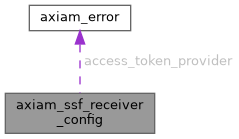

|
AXIAM C SDK 1.0.0
C11 client SDK for AXIAM (CONTRACT.md §1-§7, §9-§11, §13 incl. §6.1 mTLS)
|
A receiver configuration (§32.7: { issuer, audience, jwks_uri | discovery_url, access_token_provider }).
More...
#include <ssf.h>

Data Fields | |
| const char * | issuer |
The transmitter's issuer — compared to iss exactly. | |
| const char * | audience |
This receiver's audience — the stream's audience. | |
| const char * | jwks_uri |
The JWKS URL itself (AXIAM: {issuer}/oauth2/jwks). | |
| const char * | discovery_url |
The transmitter's SSF configuration document (/.well-known/ssf-configuration…): its issuer must equal issuer, and its jwks_uri is used. | |
| axiam_ssf_token_fn | access_token_provider |
| The bearer for axiam_ssf_poll(); NULL for a push-only receiver. | |
| void * | access_token_ctx |
Passed to access_token_provider. | |
| long | replay_window_s |
How long a jti is remembered, seconds. | |
| axiam_ssf_replay_check_fn | replay_store |
Where accepted jtis are kept; NULL uses the in-memory store (one process, lost on restart, expired entries dropped as it goes). | |
| void * | replay_ctx |
Passed to replay_store. | |
A receiver configuration (§32.7: { issuer, audience, jwks_uri | discovery_url, access_token_provider }).
Copied by axiam_ssf_receiver_new(); nothing is borrowed.
| const char* axiam_ssf_receiver_config::issuer |
The transmitter's issuer — compared to iss exactly.
Required.
| const char* axiam_ssf_receiver_config::audience |
This receiver's audience — the stream's audience.
Required.
| const char* axiam_ssf_receiver_config::jwks_uri |
The JWKS URL itself (AXIAM: {issuer}/oauth2/jwks).
Exactly one of this and discovery_url.
| const char* axiam_ssf_receiver_config::discovery_url |
The transmitter's SSF configuration document (/.well-known/ssf-configuration…): its issuer must equal issuer, and its jwks_uri is used.
| axiam_ssf_token_fn axiam_ssf_receiver_config::access_token_provider |
The bearer for axiam_ssf_poll(); NULL for a push-only receiver.
| void* axiam_ssf_receiver_config::access_token_ctx |
Passed to access_token_provider.
| long axiam_ssf_receiver_config::replay_window_s |
How long a jti is remembered, seconds.
0 means the default; anything below AXIAM_SSF_MIN_REPLAY_WINDOW_S is refused.
| axiam_ssf_replay_check_fn axiam_ssf_receiver_config::replay_store |
Where accepted jtis are kept; NULL uses the in-memory store (one process, lost on restart, expired entries dropped as it goes).
| void* axiam_ssf_receiver_config::replay_ctx |
Passed to replay_store.